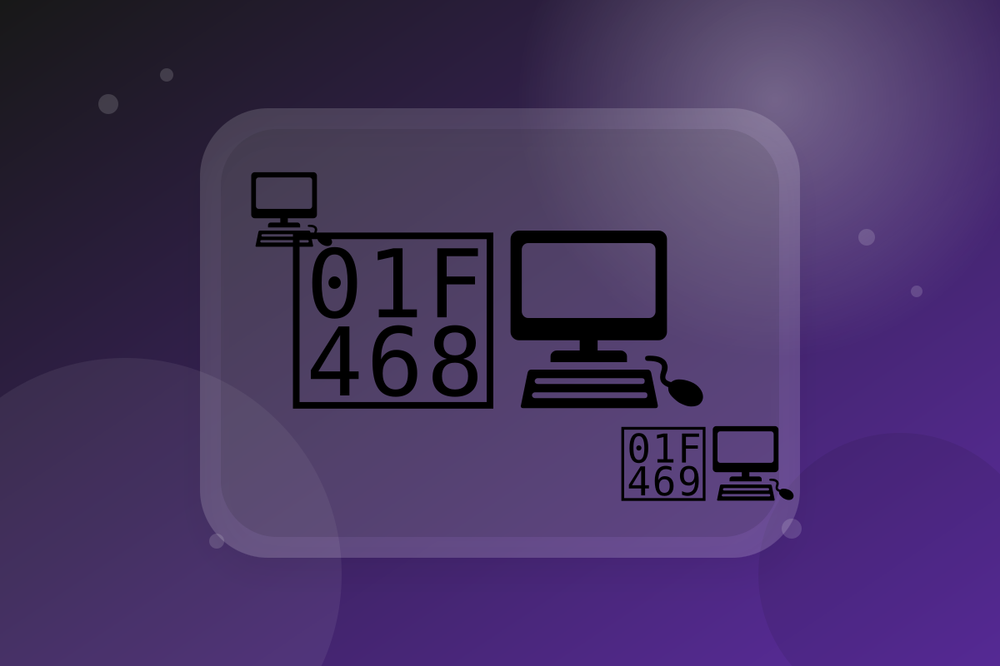

Más sobre nosotros
Somos un grupo de estudiantes de la UTN, actualmente cursando la Tecnicatura en Programación. Este trabajo práctico tiene como objetivo aplicar lo aprendido en clase. Decidimos crear una página web de reservas virtuales porque nos pareció una de las ideas más interesantes propuestas.
Nuestro equipo
Nuestro equipo está compuesto por Matias Villalba, Facundo Ortiz, Simon Zacchino y Ciro Sabariz.
